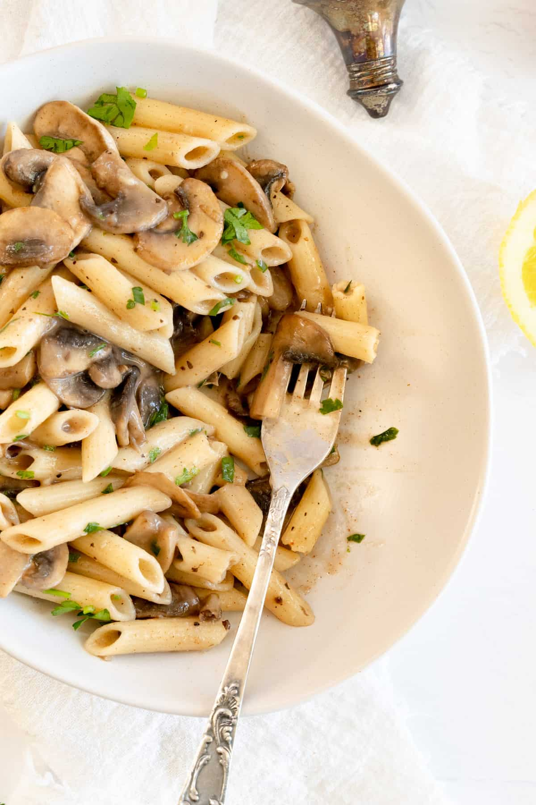

Mushroom Pasta

Description
This easy vegan mushroom pasta without cream is ready in under 30 minutes and is made with sliced mushrooms in a creamy garlic and parsley sauce.
This recipe can be made with or without gluten.
Use any type of pasta you like - great with spaghetti, fettuccine, penne, spiral and similarOnly a spoonful of dairy-free butter is used.Can be
successfully made with or without gluten.Ready in under 30 minutes, great for quick mid week dinner.
Dietary friendly - vegan, dairy free, cream free, nut free, soy free*, corn free, and gluten free*
Ingredients
- Button mushrooms
- Pasta
- Dairy free butter
- garlic cloves
- Fresh parsley
- Salt, ground paprika and black pepper
Steps
- Cook pasta as instructed, drain and set aside. I always like to undercook by one minute to ensure it is al dente.
- In a bowl whisk together dairy free milk and plain flour. Set aside.
- In a skillet over medium to high heat melt the dairy free butter, sauté mushrooms until they have started to wilt and then stir through crushed garlic.
Give the milk and flour a quick stir to pick up the flour from the bottom of the bowl and then pour over the mushrooms, add half of the chopped parsley,
paprika, salt, pepper and lemon juice. Lower heat to low - medium, and stir through until the sauce has thickened. Add cooked pasta and stir everything
together. Serve and garnish with remaining parsley.